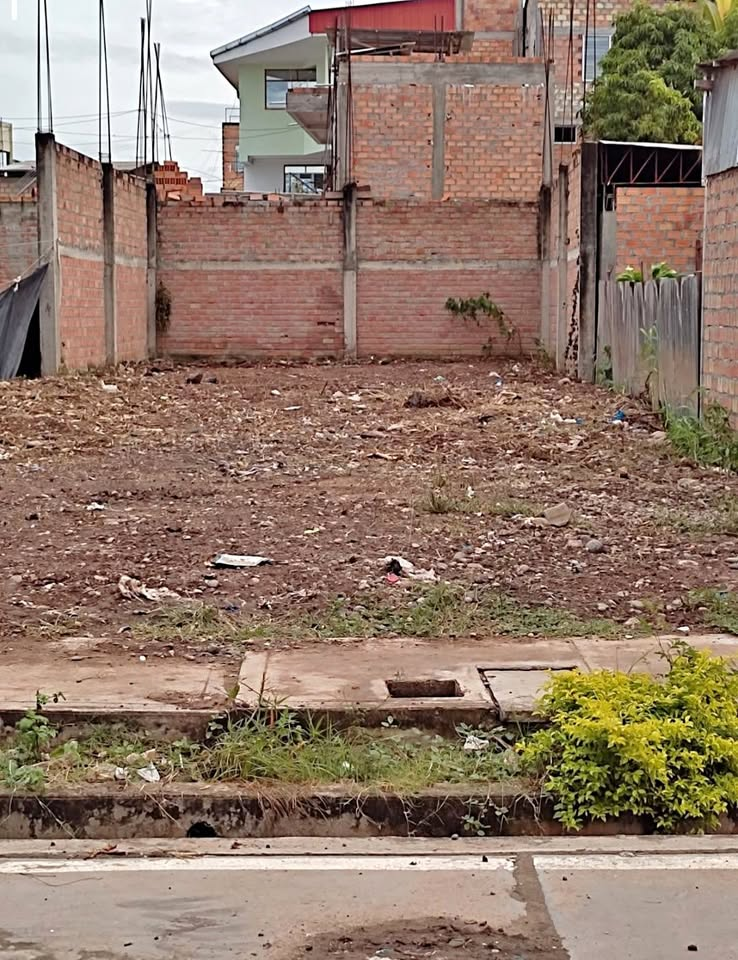

Precio desconocido 90 m²

LLAMAR AL [hidden information] Medidas del terreno: Frente: 9 metros Fondo: 30 metros Zona comercial, a treinta metros del Mercado Municipal de Picota. Área construida al fondo: 10x9x10m Bases de proyección a tres plantas. Dirección: Psje. Gonzalo Villavicencio Aguilar 1ra cuadra. Calle pavimentada con servicios de agua y desagüe en la propiedad.